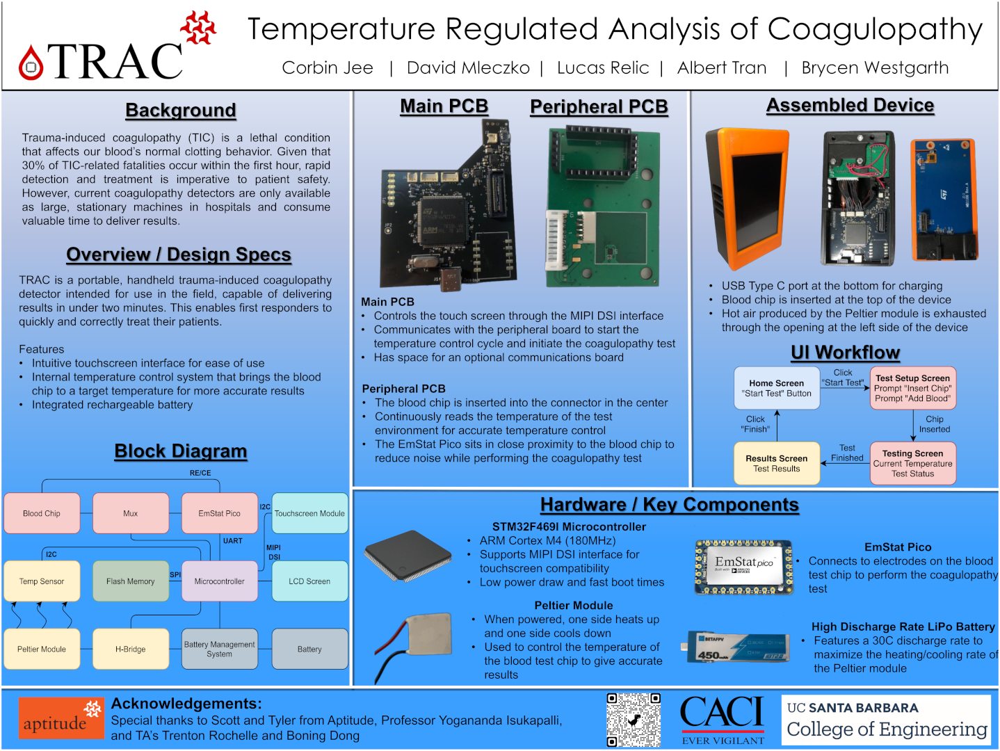

Projects
Senior Project
This project was my senior capstone project for my bachelor's degree where I collaborated with four other computer engineering students and a biomedical tech startup to build a prototype portable medical device. The purpose of the device was to rapidly diagnose a blood condition called coagulopathy which is a life threatening condition that is very common in physical trauma patients. It does so by performing very precise electrochemical analysis on a sample of blood from a patient. The system we designed was built around an STM32F4 series microcontroller with custom PCB and included a touch screen interface for user interaction. One of the main features of the device is an internal temperature regulation system driven by peltier device with PID controller. This temperature regulation is necessary for achieving accurate electrochemical measurements in the field and potentially in military settings.
Original Project WebsitePresentation
Poster
Style Transfer Video Processor
This is an open source project that I came up with in 2021 to make artistically interesting videos. The project extends the neural style transfer image processing technique to video by generating smooth transitions between a sequence of reference style images across video frames. The generated output video is a highly altered, artistic representation of the input video consisting of constantly changing abstract patterns and colors that emulate the original content of the video. The user's choice of style reference images, style sequence order, and style sequence length allow for infinite user experimentation and the creation of an endless range of artistically interesting videos. The project was written entirely in Python using Tensorflow for the neural network implementation.
Dot Matrix Photo Printer
This is a class project for an embedded systems class that was able to print images composed of dots from a normal felt tip pen. The project was made using an STM32L4 development board with a 2D plotting carriage made from laser cut plywood. The images being printed on the device had to go through a preprocessing stage to convert the pixels to binary black and white. The image processing techniques we used for this were image dithering and simple threshold filtering.
Original Project Website